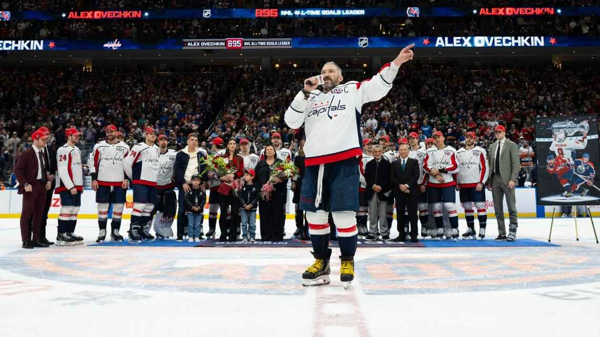
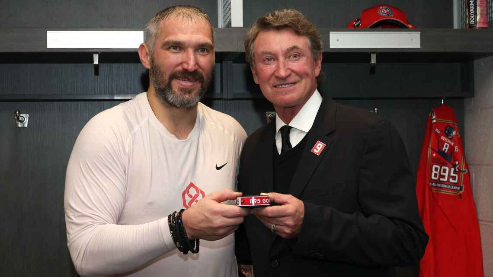
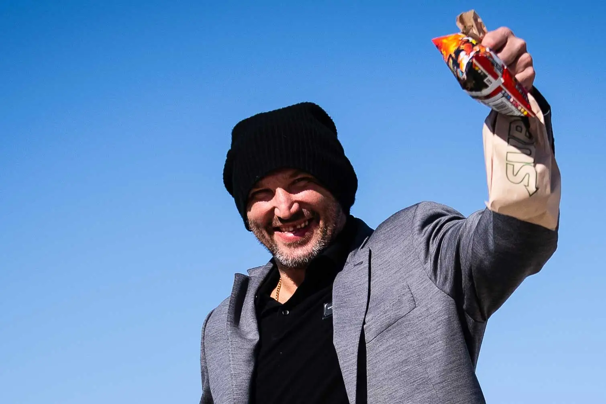
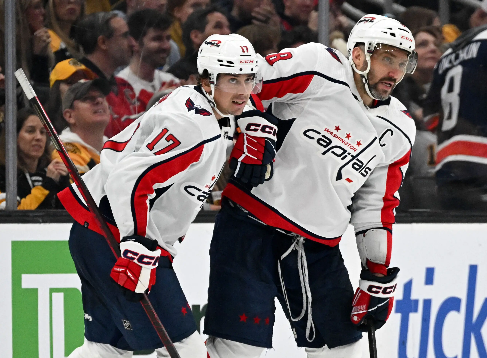

NEW YORK — After Alex Ovechkin scored his NHL record-breaking 895th goal -- in vintage
Ovechkin fashion, from his "office," on an old-school wrist shot -- he skated to center ice and
belly flopped.
The celebration, the Washington Capitals captain said, was unplanned.
"Ice was bad today," he explained. "I fell."
Ovechkin's record-breaking goal - TNT
After the iconic moment, Ovechkin's teammates swarmed him. The late-season game between the Capitals and New York Islanders paused for 25 minutes for an on-ice ceremony. Wayne Gretzky, the legend whom Ovechkin passed, made his way down; the Hall of Famer graciously followed the 39-year-old from one arena to the next as he closed in on his record, fulfilling a promise to be the first person to shake Ovechkin's hand afterward -- just as Gordie Howe, the previous record holder, had done for Gretzky in 1994.
Ovechkin’s ceremony following his record-breaking goal - Getty Images, Jess Rapfogel
As the league set up carpet on the ice, Ovechkin was focused on hugging each of his teammates. Ovechkin then fixated on finding his family, including his mother, wife and their two young sons.
"Without them, it's basically, I don't know if I can reach this milestone,"
- Alex Ovechkin
All the while, a video tribute played on the videoboard at UBS Arena on Long Island.
Those
congratulating Ovechkin included a who's who of sports GOATs: Roger Federer, Michael Jordan,
LeBron James, Sidney Crosby, Derek Jeter, Simone Biles, Michael Phelps and Katie Ledecky.
"To be honest with you, I didn't see it," Ovechkin said. "But the boys told me that lots of great people, great athletes support me and congratulate me. It's huge.
As teammate Tom Wilson said earlier in the week, the attention on Ovechkin was unparalleled for
their sport. "To try to think about what he's going through, the pressure, the entire game of
hockey is on his shoulders right now. It's bigger than hockey," Wilson said. "And for him to
handle that, to perform, to lead the top team in the league and still be such a fun teammate,
it's really remarkable."
It's what makes Ovechkin, the NHL's new all-time leader in
goals, a true original -- and perhaps the last man who will ever hold the title.
"They say records were meant to be broken, but I'm not sure who's going to get more goals than that."
- Wayne Gretzky
Ovechkin and Gretzky with the record-breaking puck - Getty Images, Bruce Bennett
WHEN GRETZKY ECLIPSED Howe's mark 31 years ago, many around the sport believed that was it. Nobody would surpass The Great One, whose stat line was so outlandish over a 1,487-game career, that you could take away his final goal total (894) and he'd still be the league's all-time leader in points.
Gretzky, over the years, was known to say he was sure "somebody, somewhere will come along and break it." But few people believed it, especially as the game evolved. The average goals per NHL game during Gretzky's career was 6.93. Since Ovechkin's rookie season, the average is 5.72. But something was always different about Ovechkin, who was a surefire talent when the Capitals selected him No. 1 in 2004. Ovechkin scored two goals in his first NHL game and finished with 52 in his rookie season.
The "Alex Ovechkin Effect" in Washington, D.C., is undeniable. Since Ovechkin's rookie season (2005-06), hockey players in the Potomac Valley region have increased by 71%, according to USA Hockey statistics. To help meet the growing demand for access, the Caps have helped build or refurbish 14 outdoor inline rinks. Ovechkin used his platform for charity; in March he pledged a dollar amount equal to his career goal total to pediatric cancer for every goal he scored for the rest of his career.
His reach expands well past Caps fandom. Utah Hockey Club center Logan Cooley, who was born in Pittsburgh a year before Crosby's and Ovechkin's debut seasons, cites Ovechkin as his favorite player growing up. Canadiens winger Patrik Laine grew up in Finland idolizing the Russian winger. Even Minnesota Wild defenseman Brock Faber admits he owned Ovechkin jerseys growing up.
Ovechkin and Matthews - Getty Images, Mark Blinch, Ovechkin scores against San Jose - Imagn-Images, David Gonzales, Ovechkin and Crosby shaking hands - Getty Images, Mitchell Layton
OVECHKIN WAS OFF to a torrid start this season, in which the Capitals surprisingly emerged as the top team in the league after successfully undergoing a retool on the fly. He scored 15 goals through his first 18 games before things came to a screeching halt just before Thanksgiving. The Capitals' captain had already scored twice against Utah in a Nov. 18 road game when Utah's Jack McBain cut through Washington's zone and got tangled with Ovechkin, who immediately fell to the ice.
The result: a broken left fibula. It was the first time in Ovechkin's 20-year career that he broke a bone.
"When that happened," goaltender Charlie Lindgren said, "everyone was kind of thinking to themselves whether or not it was going to be possible."
But Ovechkin is built differently. As he famously declared after avoiding injury from an errant puck in 2006:
"I'm OK, Russian machine never breaks."
- Alex Ovechkin
Within two days of the injury, Ovechkin rid himself of the walking boot. (The fibula doesn't take on a substantial weight-bearing load.) Soon after, he was skating. Ovechkin remained around the team, getting electric stimulation to help with blood flow, and just had to wait it out until the bone healed enough to sustain contact.
Ovechkin returned just after Christmas, scoring in each of his first two games back, naturally.
Ovechkin's unorthodox habits -- in an age when many elite athletes view their body as a temple -- have become legendary. Before arriving at the team plane for a road trip, Ovechkin always stops at the same Subway where he orders a spicy Italian footlong and Flaming Hot Cheetos. When the Capitals arrive at road arenas, there's a request that the No. 8 water bottles on the bench be filled with Coke or Pepsi, whichever the arena has a deal with. His home pregame meal is a heavy one: a chicken parm and pasta Alfredo combination from a local joint, Mamma Lucia's.
Ovechkin won't be the first or last player in the gym, and he's judicious about how much time he spends on the ice.
"At this point in his career, he knows exactly what he needs to do to get himself ready," said his locker mate, Nic Dowd, who explained the two keep opposite hours. "A lot of it is mental. And it's hard to argue against the results."
Alex Ovechkin with his pregame meal - Twitter, Washington Capitals
ANYONE WHO FOLLOWS the NHL has been keenly aware of Ovechkin's chase for Gretzky's record. What many fans don't know: the details that allow Ovechkin to thrive.
He's a gear nerd. It's not a secret that Ovechkin is an equipment free agent right now. Most players have deals with CCM, Bauer, Sherwood or True hockey. Last season, Ovechkin toyed with a few different sticks until he found a custom model around All-Star Weekend. Since switching to the new stick -- which is wrapped in black, with no logos -- Ovechkin has scored 64 goals in 96 games.
Capitals coach Spencer Carbery has made an intentional effort to put Ovechkin in better positions to thrive. Ovechkin's ice time was reduced to under 18 minutes per game this season for the first time in his career. He cut his 4-on-4 play, has sometimes swapped him from left to right wing, and gives him more shifts in the offensive zone.
"It's about quality shifts, not quantity," Carbery said. "And with O, if you present him the information, if you explain here's why we're doing this and here's how it will help you and the team, he always buys in. That's never an issue."
The one nonnegotiable: Ovechkin isn't missing any ice time during the two minutes the Caps are on the power play. Ovechkin has been on the ice for 97.3% of the Caps' power-play time this season. Only four other players are in the 80% range or higher: Nikita Kucherov, Nathan MacKinnon, Leon Draisaitl and Quinn Hughes.
Ovechkin is not resented in the locker room because he is emphatic about being a good teammate.
"It really feels like he gets more excited, or just as excited for our goals than his goals," said Dylan Strome, who assisted on No. 895. "He's always keeping the mood light, with all of his pregame routines, handshakes with guys in the tunnel, screaming in the locker room. He's very consistent like that."
Ovechkin and Dylan Strome - USA Today, Brian Fluharty
When rookie Aliaksei Protas was first called up, he needed to return to the farm club in Hershey, Pennsylvania, to retrieve some personal items on an off day. And he needed to borrow one of his teammates' cars.
"The big man come up to me, and first he is mad because I asked [Evgeny Kuznetsov], and he said, 'Why didn't [you] come to me straight?'" Protas recalled.
Ovechkin loaned Protas his car. "He told me to keep it for a few months," Protas said.
Washington signed its top prospect, Ryan Leonard, on March 31, the day before the Caps played in Boston. Ovechkin texted Leonard, the Boston College star who was already in town, and invited him to a sushi dinner that night with a few teammates. Afterward, Leonard told Ovechkin a few of his buddies would love to meet him, and they knew just the spot. So the night before Ovechkin scored No. 891, he was drinking a beer at Circle Tavern, a bar near the BC campus.
"Everywhere we go lately, it's been rock-star stuff the second he walks into a room, people grab their phones," Wilson said. "And he doesn't get fazed by it at all. He'll go out walking in a Canadian city, doesn't care who recognizes him. Will stop for fans. Most guys aren't like that. But that's just Ovi."
ON THE DAY Ovechkin tied Gretzky's record, there was an aura surrounding him. He was smiling and laughing as he came off the ice. He was most excited to see his former Stanley Cup-winning teammates, such as Nicklas Backstrom, T.J. Oshie and Braden Holtby, who were being honored later that night as part of the Capitals' 50th anniversary celebration.

In-arena celebration when Ovechkin tied Wayne Gretzky - Andy Parr
Backstrom and Ovechkin have always been instinctively linked, with the Swedish center assisting on more of his goals (279) than any other player. Backstrom (hip) and Oshie (back) have not had the same injury luck as Ovechkin. Both are still under contract but sidelined on long-term injured reserve, probably for the remainder of their careers. Ovechkin acknowledged both players in his on-ice speech.
"There's not many instances where someone has openly, in one instance or another, kind of thanked me in front of the world," Oshie said. "So in that moment, I kind of assumed and knew that 'Backy' was going to get a shoutout. They go hand in hand and their bond is like no other of two teammates that I've seen. But for him to call my name in that moment was incredibly special and, honestly, very emotional for me inside to have him mention and give me a little shoutout during the biggest accomplishment that the world of hockey has seen in a very long time."
Now, everyone wonders whether there could be another moment like this. As for Ovechkin's personal goals, he has been very coy. Though he once famously told ESPN's Linda Cohn he'd retire as soon as he broke Gretzky's record, that's not a foregone conclusion. Ovechkin is under contract for one more season for $9.5 million. He'd love to win another Stanley Cup, and this Washington team has proved capable.
The next question is: Will anyone come for Ovi's record? Should Ovechkin play next season then retire, ESPN Research projects he will finish with 937 career goals. At his current goals pace (0.64 per game), it would take Matthews 848 games to surpass it; that puts him 11 seasons away. For Draisaitl (0.51), the projection is 1,066 games (13 seasons). David Pastrnak (0.52) and Connor McDavid (0.51) are each projected to get there in 14 seasons.
Perhaps, they -- or someone else -- will get there one day. But for the foreseeable future, that record belongs to Ovechkin.
"This is something crazy. I'm probably going to need a couple more days. Maybe a couple weeks to realize what it means to be No. 1," Ovechkin said Sunday. "All I can say, I'm very proud. I'm very proud for myself. I'm really proud for my family, for all my teammates, that helped me to reach that milestone, and for all my coaches. It's huge. It's an unbelievable moment."
This story has been reproduced as part of coursework for the Philip Merrill College of Journalism at the University of Maryland, College Park. It was originally published by ESPN.